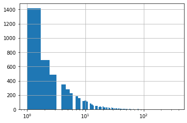
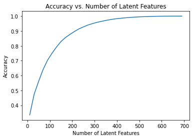
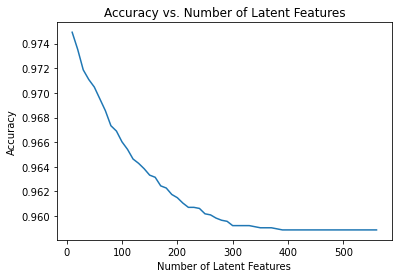

| article_id | title | ||
|---|---|---|---|
| 0 | 1430.0 | using pixiedust for fast, flexible, and easier... | ef5f11f77ba020cd36e1105a00ab868bbdbf7fe7 |
| 1 | 1314.0 | healthcare python streaming application demo | 083cbdfa93c8444beaa4c5f5e0f5f9198e4f9e0b |
| 2 | 1429.0 | use deep learning for image classification | b96a4f2e92d8572034b1e9b28f9ac673765cd074 |
| 3 | 1338.0 | ml optimization using cognitive assistant | 06485706b34a5c9bf2a0ecdac41daf7e7654ceb7 |
| 4 | 1276.0 | deploy your python model as a restful api | f01220c46fc92c6e6b161b1849de11faacd7ccb2 |
Recommendations with IBM 😺
Udacity project with IBM Watson Studio platform data
| doc_body | doc_description | doc_full_name | doc_status | article_id | |
|---|---|---|---|---|---|
| 0 | Skip navigation Sign in SearchLoading...\r\n\r... | Detect bad readings in real time using Python ... | Detect Malfunctioning IoT Sensors with Streami... | Live | 0 |
| 1 | No Free Hunch Navigation * kaggle.com\r\n\r\n ... | See the forest, see the trees. Here lies the c... | Communicating data science: A guide to present... | Live | 1 |
| 2 | ☰ * Login\r\n * Sign Up\r\n\r\n * Learning Pat... | Here’s this week’s news in Data Science and Bi... | This Week in Data Science (April 18, 2017) | Live | 2 |
| 3 | DATALAYER: HIGH THROUGHPUT, LOW LATENCY AT SCA... | Learn how distributed DBs solve the problem of... | DataLayer Conference: Boost the performance of... | Live | 3 |
| 4 | Skip navigation Sign in SearchLoading...\r\n\r... | This video demonstrates the power of IBM DataS... | Analyze NY Restaurant data using Spark in DSX | Live | 4 |
Part I : Exploratory Data Analysis
3.0364count 45976
unique 5148
top 2b6c0f514c2f2b04ad3c4583407dccd0810469ee
freq 364
Name: email, dtype: object
Explore and remove duplicate articles from the df_content dataframe.
| doc_body | doc_description | doc_full_name | doc_status | article_id | |
|---|---|---|---|---|---|
| 365 | Follow Sign in / Sign up Home About Insight Da... | During the seven-week Insight Data Engineering... | Graph-based machine learning | Live | 50 |
| 692 | Homepage Follow Sign in / Sign up Homepage * H... | One of the earliest documented catalogs was co... | How smart catalogs can turn the big data flood... | Live | 221 |
| 761 | Homepage Follow Sign in Get started Homepage *... | Today’s world of data science leverages data f... | Using Apache Spark as a parallel processing fr... | Live | 398 |
| 970 | This video shows you how to construct queries ... | This video shows you how to construct queries ... | Use the Primary Index | Live | 577 |
| 971 | Homepage Follow Sign in Get started * Home\r\n... | If you are like most data scientists, you are ... | Self-service data preparation with IBM Data Re... | Live | 232 |
0714
1051
514945993find the most viewed article_id, as well as how often it was viewed.
1429.0 937
1330.0 927
1431.0 671
1427.0 643
1364.0 627
Name: article_id, dtype: int64| article_id | title | user_id | |
|---|---|---|---|
| 0 | 1430.0 | using pixiedust for fast, flexible, and easier... | 1 |
| 1 | 1314.0 | healthcare python streaming application demo | 2 |
| 2 | 1429.0 | use deep learning for image classification | 3 |
| 3 | 1338.0 | ml optimization using cognitive assistant | 4 |
| 4 | 1276.0 | deploy your python model as a restful api | 5 |
Part II: Rank-Based Recommendations
Unlike in the earlier lessons, we don’t actually have ratings for whether a user liked an article or not. We only know that a user has interacted with an article. In these cases, the popularity of an article can really only be based on how often an article was interacted with.
return the n top articles ordered with most interactions as the top.
['use deep learning for image classification', 'insights from new york car accident reports', 'visualize car data with brunel', 'use xgboost, scikit-learn & ibm watson machine learning apis', 'predicting churn with the spss random tree algorithm', 'healthcare python streaming application demo', 'finding optimal locations of new store using decision optimization', 'apache spark lab, part 1: basic concepts', 'analyze energy consumption in buildings', 'gosales transactions for logistic regression model']
[1429.0, 1330.0, 1431.0, 1427.0, 1364.0, 1314.0, 1293.0, 1170.0, 1162.0, 1304.0]Part III: User-User Based Collaborative Filtering
reformat the df dataframe to be shaped with users as the rows and articles as the columns.
If a user has interacted with an article, then place a 1 where the user-row meets for that article-column. It does not matter how many times a user has interacted with the article, all entries where a user has interacted with an article should be a 1.
If a user has not interacted with an item, then place a zero where the user-row meets for that article-column.
take a user_id and provide an ordered list of the most similar users to that user (from most similar to least similar). The returned result should not contain the provided user_id, as we know that each user is similar to him/herself. Because the results for each user here are binary, it (perhaps) makes sense to compute similarity as the dot product of two users.
return the articles you would recommend to each user.
['502 forgetting the past to learn the future: long ...\nName: title, dtype: object',
'discover hidden facebook usage insights',
'aspiring data scientists! start to learn statistics with these 6 books!',
'using bigdl in dsx for deep learning on spark',
'using machine learning to predict parking difficulty',
'data science platforms are on the rise and ibm is leading the way',
'a dynamic duo – inside machine learning – medium',
'this week in data science (february 14, 2017)',
'what is smote in an imbalanced class setting (e.g. fraud detection)?',
'shaping data with ibm data refinery']improve the consistency of the user_user_recs function from above.
Instead of arbitrarily choosing when we obtain users who are all the same closeness to a given user - choose the users that have the most total article interactions before choosing those with fewer article interactions.
Instead of arbitrarily choosing articles from the user where the number of recommended articles starts below m and ends exceeding m, choose articles with the articles with the most total interactions before choosing those with fewer total interactions. This ranking should be what would be obtained from the top_articles function you wrote earlier.
| num_interactions | neighbor_id | similarity | |
|---|---|---|---|
| 13 | 116 | 170 | 2 |
| 12 | 114 | 3169 | 2 |
| 9 | 97 | 204 | 2 |
| 15 | 95 | 5138 | 2 |
| 0 | 78 | 40 | 2 |
| ... | ... | ... | ... |
| 2110 | 1 | 1039 | 0 |
| 4091 | 1 | 3150 | 0 |
| 2041 | 1 | 1103 | 0 |
| 4947 | 1 | 3182 | 0 |
| 1356 | 1 | 2049 | 0 |
5148 rows × 3 columns
The top 10 recommendations for user 20 are the following article ids:
['1429.0', '1330.0', '1431.0', '1427.0', '1364.0', '1314.0', '1162.0', '1304.0', '43.0', '1351.0']
The top 10 recommendations for user 20 are the following article names:
['use deep learning for image classification', 'insights from new york car accident reports', 'visualize car data with brunel', 'use xgboost, scikit-learn & ibm watson machine learning apis', 'predicting churn with the spss random tree algorithm', 'healthcare python streaming application demo', 'analyze energy consumption in buildings', 'gosales transactions for logistic regression model', 'deep learning with tensorflow course by big data university', 'model bike sharing data with spss']We can use get_top_article_ids(n) function to recommend the top articles with most interactions. This will work in general cases since we can assume these articles were more interacted because it drew more people’s interest. Another better way to make recommendation to new user may be to recommend top articles but in order of newest. The idea is that it is still popular and it reduces risk of recommending articles based on date it is created. (Since the longer it exists, the more chance it has more interactions than newer ones without much special attraction)
Part IV: Matrix Factorization
build use matrix factorization to make article recommendations to the users on the IBM Watson Studio platform.
| article_id | 0.0 | 100.0 | 1000.0 | 1004.0 | 1006.0 | 1008.0 | 101.0 | 1014.0 | 1015.0 | 1016.0 | ... | 977.0 | 98.0 | 981.0 | 984.0 | 985.0 | 986.0 | 990.0 | 993.0 | 996.0 | 997.0 |
|---|---|---|---|---|---|---|---|---|---|---|---|---|---|---|---|---|---|---|---|---|---|
| user_id | |||||||||||||||||||||
| 1 | 0.0 | 0.0 | 0.0 | 0.0 | 0.0 | 0.0 | 0.0 | 0.0 | 0.0 | 0.0 | ... | 0.0 | 0.0 | 1.0 | 0.0 | 0.0 | 0.0 | 0.0 | 0.0 | 0.0 | 0.0 |
| 2 | 0.0 | 0.0 | 0.0 | 0.0 | 0.0 | 0.0 | 0.0 | 0.0 | 0.0 | 0.0 | ... | 0.0 | 0.0 | 0.0 | 0.0 | 0.0 | 0.0 | 0.0 | 0.0 | 0.0 | 0.0 |
| 3 | 0.0 | 0.0 | 0.0 | 0.0 | 0.0 | 0.0 | 0.0 | 0.0 | 0.0 | 0.0 | ... | 1.0 | 0.0 | 0.0 | 0.0 | 0.0 | 0.0 | 0.0 | 0.0 | 0.0 | 0.0 |
| 4 | 0.0 | 0.0 | 0.0 | 0.0 | 0.0 | 0.0 | 0.0 | 0.0 | 0.0 | 0.0 | ... | 0.0 | 0.0 | 0.0 | 0.0 | 0.0 | 0.0 | 0.0 | 0.0 | 0.0 | 0.0 |
| 5 | 0.0 | 0.0 | 0.0 | 0.0 | 0.0 | 0.0 | 0.0 | 0.0 | 0.0 | 0.0 | ... | 0.0 | 0.0 | 0.0 | 0.0 | 0.0 | 0.0 | 0.0 | 0.0 | 0.0 | 0.0 |
5 rows × 714 columns
Remember that SVD require there are no NAN values!!
to get an idea of how the accuracy improves as we increase the number of latent features.

Train test split
0
574
682
0Now use the user_item_train dataset from above to find U, S, and V transpose using SVD. Then find the subset of rows in the user_item_test dataset that you can predict using this matrix decomposition with different numbers of latent features to see how many features makes sense to keep based on the accuracy on the test data.
(20, 574)
(20, 574)
Conclusion
We can see that as the number of latent feature increases, the accuracy decreases. Which is a sign of overfitting since this is a plot of the test set. This can be explained by the small number of users who have both testing and training datasets. We conclude that it is robust enough to decide if our model is ready for deployment. To fix this problem, we can collect more data or use regularizations. In addition we can perform an online A/B testing to measure whether rank based recommendation system or matrix recommendation performs better. Note that our accuracy metrics may not be the best measure of our performance since it is so skewed that by just hard coding, we can correctly guess all except 20. Better metric to use may be precision/recall.
Make html notebook
0